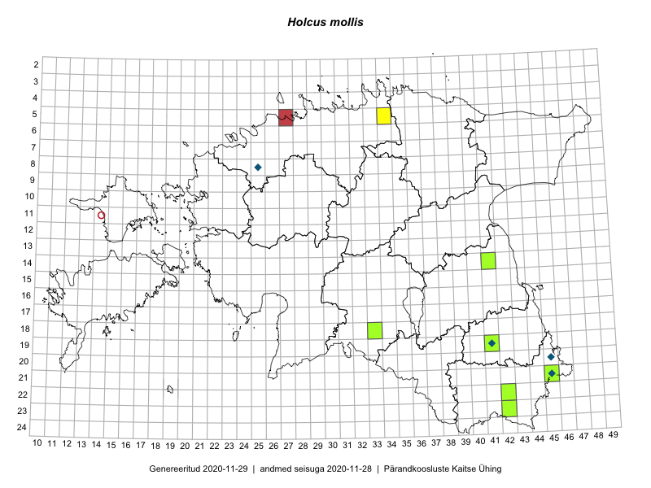

Holcus mollis
Uuendatud: 2016-12-01
Kaardile koondatud taksonid: Holcus mollis L.

Kaart põhineb 7 kirjel, neist vaatlusi 5 ja eksemplare 2.
Viited andmebaasikirjetele
- Toomas Kukk, Timo Luhamäe, Kersti Tambets, Sten Mander, Janika Sammasto: 2014-07-30: 21-45: ala
- Oliver Parrest: 2015-08-15: 20-12: ala
- Toomas Kukk, Tiit Hallikma, Johannes Kõdar: 2016-06-14: 21-45: ala
- Tiit Hallikma, Toomas Kukk, Johannes Kõdar: 2016-06-14: 21-45: GPS punkt
- Thea Kull, Indrek Tammekänd: 2016-07-19: 18-33: ala
- Peedu Saar, Ott Luuk: 2015-09-24: 23-42: ala
- Meeli Mesipuu, Thea Kull: 2012-09-16: 22-42: GPS punkt